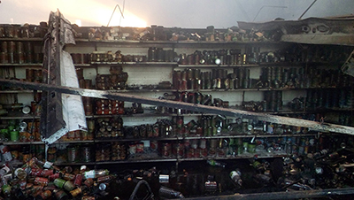

Una banda de cuatro delincuentes provocó un incendio de grandes magnitudes tras detonar un cajero automático durante la madrugada de este lunes en la ciudad de Concepción, Región del Biobío.
Los antisociales intentaban robar un cajero perteneciente al banco CorpBanca, ubicado en la esquina de calle Abdón Cifuentes con Los Lleuques, utilizando el método de saturación por gas.
Fue tanto el combustible empleado que detonaron el recinto completo perteneciente a un supermercado Unimarc.
Existió temor entre los vecinos por la cercanía del fuego a sus viviendas, sin embargo, personal de Bomberos logró controlar el incendio.
Los individuos, quienes llegaron en un automóvil, lograron escapar encendiendo barricadas para evadir la acción policial.
Se desconoce el paradero de los responsables, sin embargo, funcionarios de Carabineros trabaja para identificar a los antisociales y dar con su paradero.